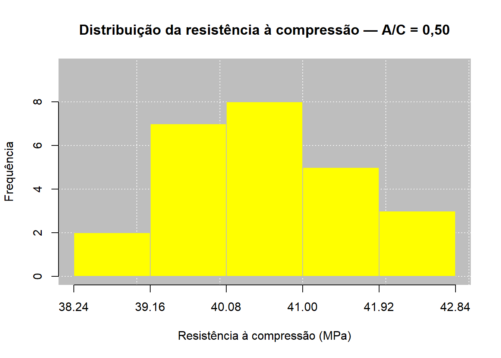
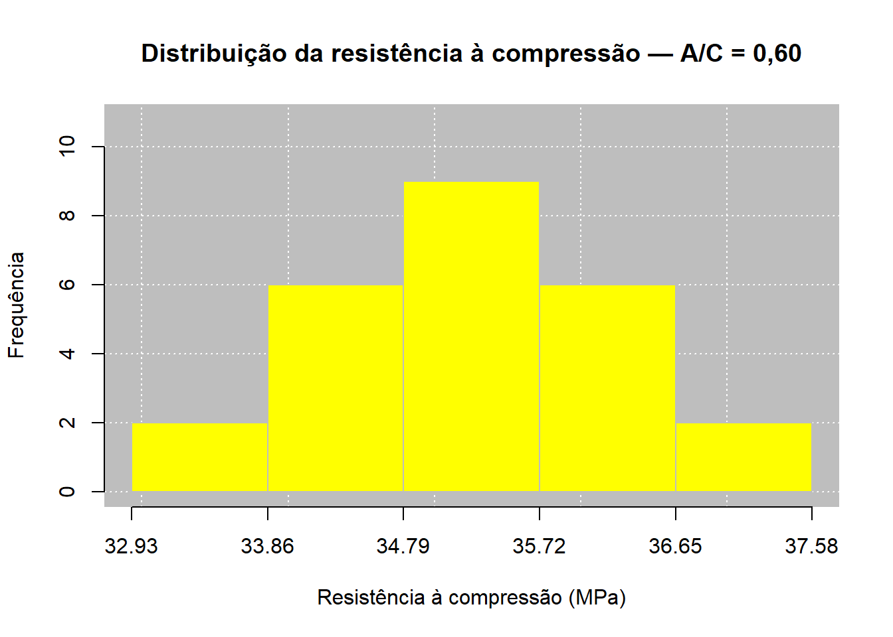
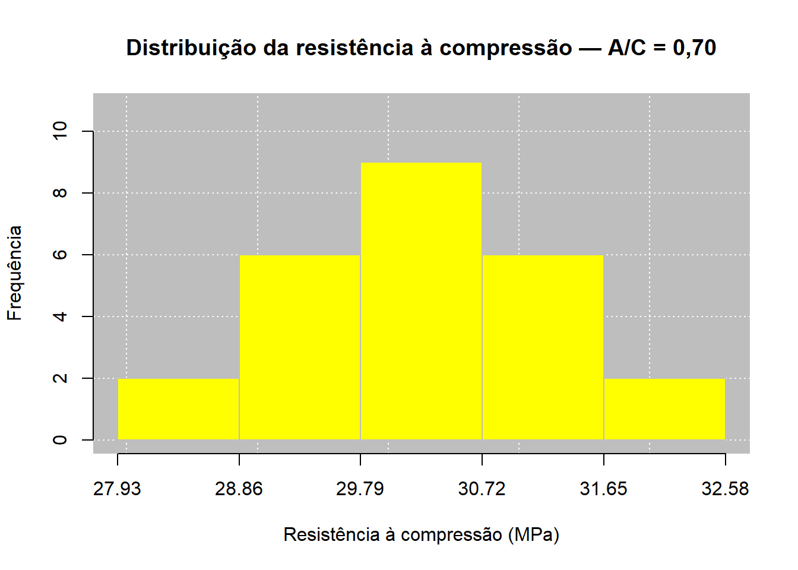

| Corpo de Prova | A/C = 0,50 (MPa) | A/C = 0,60 (MPa) | A/C = 0,70 (MPa) |
|---|---|---|---|
| 1 | 40.6 | 34.8 | 29.8 |
| 2 | 41.9 | 36.2 | 31.2 |
| 3 | 40.4 | 35.4 | 30.4 |
| 4 | 40.0 | 34.5 | 29.5 |
| 5 | 39.2 | 33.9 | 28.9 |
| 6 | 42.1 | 36.8 | 31.8 |
| 7 | 39.8 | 35.1 | 30.1 |
| 8 | 40.7 | 34.7 | 29.7 |
| 9 | 41.3 | 36.0 | 31.0 |
| 10 | 38.9 | 33.6 | 28.6 |
| 11 | 40.2 | 35.3 | 30.3 |
| 12 | 39.5 | 34.2 | 29.2 |
| 13 | 41.0 | 36.4 | 31.4 |
| 14 | 40.8 | 35.7 | 30.7 |
| 15 | 39.7 | 34.9 | 29.9 |
| 16 | 42.4 | 37.1 | 32.1 |
| 17 | 40.1 | 35.0 | 30.0 |
| 18 | 39.3 | 34.0 | 29.0 |
| 19 | 41.5 | 36.3 | 31.3 |
| 20 | 40.5 | 35.5 | 30.5 |
| 21 | 38.7 | 33.4 | 28.4 |
| 22 | 39.9 | 34.6 | 29.6 |
| 23 | 41.2 | 36.1 | 31.1 |
| 24 | 40.3 | 35.2 | 30.2 |
| 25 | 42.0 | 36.6 | 31.6 |


Relatório de Aula Prática 01
Estatística e Probabilidade
Prof. Ben Dêivide (DEFIM/CAP/UFSJ)
1 📌 Introdução
A análise estatística constitui uma importante ferramenta para a compreensão, organização e interpretação de dados no campo da Engenharia Civil, especialmente em situações que envolvem ensaios experimentais, levantamentos técnicos, controle de qualidade e avaliação do comportamento de materiais e sistemas construtivos. Nesse contexto, o uso de recursos computacionais permite tornar os procedimentos estatísticos mais eficientes, precisos e reprodutíveis, favorecendo uma análise fundamentada dos resultados obtidos.
Entre as ferramentas disponíveis, o ambiente R destaca-se por oferecer recursos para manipulação, tratamento, representação gráfica e análise de dados, possibilitando a aplicação prática de diferentes conceitos estatísticos. Aliado ao pacote leem, o R permite explorar conjuntos de dados de maneira sistemática, desde sua organização e tabulação até o cálculo e a interpretação de medidas estatísticas. Entretanto, a utilização dessas ferramentas não deve se limitar à obtenção automática de resultados, sendo fundamental compreender os conceitos e procedimentos que fundamentam cada análise realizada.
Nesse sentido, a estatística descritiva apresenta-se como uma etapa essencial para a caracterização de um conjunto de dados. Medidas de posição e dispersão permitem sintetizar as principais características das observações, enquanto os coeficientes de assimetria e curtose fornecem informações adicionais sobre a forma e o comportamento da distribuição. A utilização de tabelas e representações gráficas complementa essa análise, permitindo identificar tendências, padrões, variabilidade e possíveis valores discrepantes.
Assim, esta prática propõe a integração entre os fundamentos da linguagem R, os conhecimentos de estatística descritiva e sua aplicação a dados relacionados à Engenharia Civil. A partir de um banco de dados de natureza experimental ou técnico-engenheirística, serão empregados os recursos do ambiente R e do pacote leem para organizar, representar e analisar as informações, buscando não apenas executar os procedimentos estatísticos, mas também compreender seus fundamentos e interpretar criticamente os resultados no contexto da Engenharia Civil.
2 🎯 Objetivos
2.1 Objetivo geral
Utilizar o ambiente R e o pacote leem como ferramentas de apoio à análise estatística de dados aplicados à Engenharia Civil, desenvolvendo a capacidade de organizar, representar, analisar e interpretar resultados por meio de técnicas de estatística descritiva.
2.2 Objetivos específicos
Compreender os principais fundamentos do ambiente R e da linguagem utilizada para manipulação e análise de dados;
Revisar conceitos fundamentais de estatística descritiva;
Aprofundar o estudo das medidas de assimetria e curtose;
Organizar e tabular um conjunto de dados quantitativos;
Aplicar o pacote leem na análise estatística;
Construir e interpretar tabelas e representações gráficas;
Determinar medidas de posição e dispersão;
Analisar a variabilidade e a distribuição dos dados;
Relacionar os resultados estatísticos ao contexto da Engenharia Civil;
Desenvolver uma interpretação crítica dos resultados obtidos.
3 📚 Fundamentação Teórica
3.1 Introdução ao ambiente R
3.1.1 O que é o R?
O R é um ambiente de software livre e de código aberto voltado para manipulação de dados, cálculo estatístico e geração de gráficos. Por isso, é comum ouvir duas formas de tratamento: “o R”, quando se fala do programa/sistema como um todo, e “a linguagem R”, quando se fala especificamente da sintaxe usada para escrever os comandos. Diferente de programas estatísticos comerciais fechados, o R permite que o próprio usuário crie novas funções e as compartilhe livremente com a comunidade por meio de pacotes.
O projeto nasceu em 1991, em uma Universidade da Nova Zelândia, e foi criado por Ross Ihaka e Robert Gentleman. O primeiro lançamento oficial ocorreu em 1995, e em 1997 foi criado o CRAN, uma rede de servidores que distribui o programa, sua documentação e milhares de pacotes até hoje.
Já o RStudio é a interface (IDE — Integrated Development Environment) mais usada para trabalhar com o R. Ele não substitui o R, apenas facilita seu uso por meio de janelas, botões e atalhos: sem o R instalado, o RStudio não funciona. A tela do RStudio é dividida em quatro áreas principais: o editor de scripts (onde o código é escrito), o console (onde o código é executado), o painel de ambiente/histórico (onde aparecem os objetos criados) e o painel de arquivos/gráficos/pacotes/ajuda.
3.1.2 Princípios do R
Toda a lógica interna do R pode ser resumida em três ideias simples, propostas por John Chambers, criador da linguagem S (base histórica do R):
- Tudo que existe no R é um objeto — números, textos, tabelas, gráficos e até as próprias funções são objetos guardados na memória do computador.
- Tudo que acontece no R é uma chamada de função — até uma simples soma como
10 + 15é, por trás dos panos, uma função sendo executada. - Interfaces com outros programas fazem parte do R— o R se comunica nativamente com linguagens como C, C++, Python e com tecnologias web (HTML, JavaScript), estendendo seu uso muito além da estatística básica.
3.1.3 Interface
O RStudio apresenta sua interface organizada em quatro quadrantes principais, cada um destinado a uma função específica durante o desenvolvimento das análises:
- 1º Quadrante – Editor de Scripts: espaço destinado à criação, edição e armazenamento dos códigos desenvolvidos em R, normalmente salvos em arquivos com extensão .R. Permite organizar os comandos de forma estruturada e reutilizá-los posteriormente.
- 2º Quadrante – Console: ambiente no qual os comandos são executados efetivamente, apresentando os resultados diretamente ao usuário. Também é possível inserir comandos manualmente, embora eles não sejam automaticamente organizados no script.
- 3º Quadrante – Ambiente e Histórico: apresenta os objetos criados durante a sessão, como variáveis, vetores, tabelas, conjuntos de dados e funções. Também possibilita consultar o histórico dos comandos executados e acompanhar os elementos armazenados no ambiente de trabalho.
- 4º Quadrante – Área de Visualização e Apoio: destinado principalmente à exibição dos gráficos e resultados visuais produzidos pelas análises. Essa área também permite acessar arquivos e diretórios, gerenciar pacotes instalados e consultar a documentação e os recursos de ajuda disponíveis no R.
3.1.4 Sintaxe e Semântica
A linguagem R, assim como outras linguagens de programação, apresenta regras de sintaxe e semântica, que orientam a forma como os comandos devem ser escritos e interpretados pelo sistema.
Sintaxe é o conjunto de regras que definem como o código deve ser escrito;
Semântica é o significado por trás de cada comando — ou seja, o que ele realmente faz quando executado. Entender essa diferença evita a maioria dos erros cometidos por quem está começando.
Assim, compreender os conceitos de sintaxe e semântica é fundamental para utilizar o R de maneira adequada. Enquanto a sintaxe está relacionada à forma correta de escrever e estruturar os comandos, a semântica está associada à interpretação e ao significado das operações realizadas. O domínio desses conceitos contribui para a correta aplicação dos procedimentos estatísticos abordados no estudo, incluindo a organização e análise dos dados, as medidas de posição e dispersão, além dos coeficientes de assimetria e curtose.
3.2 O livro EPAEC
3.3 Capítulo 1: Definições gerais da Estatística e técnicas de somatórios
O primeiro capítulo apresenta a Estatística como uma área importante para a coleta, organização, análise e interpretação de dados. Seu objetivo é transformar informações em resultados que possam auxiliar na compreensão de situações e na tomada de decisões.
O conteúdo apresenta três áreas principais da Estatística: Estatística Descritiva, Probabilidade e Estatística Inferencial. A Estatística Descritiva organiza e apresenta os dados por meio de tabelas, gráficos e medidas. A Probabilidade trabalha com situações que envolvem incerteza, enquanto a Estatística Inferencial utiliza dados de uma amostra para obter conclusões sobre uma população.
O capítulo também explica a importância da Estatística na pesquisa científica. Uma pesquisa envolve diferentes etapas, como definição do problema, elaboração de hipóteses, escolha da amostra, coleta e organização dos dados, análise dos resultados e elaboração das conclusões.
São apresentados ainda conceitos como população, amostra, variável e dado. As variáveis podem ser qualitativas, quando representam características ou categorias, ou quantitativas, quando são expressas por números. As variáveis quantitativas podem ser discretas ou contínuas.
Por fim, o capítulo apresenta os somatórios, representados pelo símbolo Σ, utilizados para facilitar a escrita e a realização de cálculos que envolvem vários valores. Também são apresentadas algumas propriedades e formas de utilização dos somatórios em operações matemáticas.
3.4 Capítulo 2: Coleta, organização e apresentação dos dados
O segundo capítulo apresenta as etapas de organização e apresentação dos dados, mostrando como transformar dados brutos em informações mais fáceis de analisar. Os dados coletados podem ser organizados em ordem crescente ou decrescente, formando um rol, o que facilita a identificação dos valores e a análise do conjunto.
O capítulo destaca as tabelas de distribuição de frequência, utilizadas para organizar a quantidade de vezes que cada valor aparece. São apresentadas a frequência absoluta, a frequência relativa, a frequência percentual e as frequências acumuladas. Para variáveis quantitativas contínuas, os dados podem ser agrupados em classes ou intervalos, utilizando elementos como amplitude, limites de classe e ponto médio.
Também são apresentados diferentes gráficos, como gráficos de barras, pizza, histograma, polígono de frequências e ogivas. Cada um possui uma finalidade específica e deve ser escolhido de acordo com o tipo de variável e a informação que se deseja apresentar. Além disso, trata da utilização do LEEM e do R como ferramentas para facilitar a organização, os cálculos e a representação dos dados. Com esses recursos, é possível construir tabelas de frequência e gráficos de maneira mais prática.
Por fim, o capítulo mostra que a organização adequada dos dados é fundamental para facilitar sua visualização, interpretação e análise. As tabelas, frequências e gráficos permitem resumir grandes quantidades de informações e identificar características importantes de um conjunto de dados.
3.5 Capítulo 3: Medidas de Posição
Já o terceiro capítulo apresenta as medidas de posição, que são utilizadas para resumir um conjunto de dados por meio de valores que representam sua posição central. Essas medidas facilitam a interpretação dos dados quando existe uma grande quantidade de informações. As principais medidas estudadas são a média aritmética, a mediana e a moda.
A média aritmética é uma das medidas mais conhecidas e representa um valor central dos dados. Ela é calculada considerando todas as observações do conjunto. Quando os dados estão agrupados em tabelas de frequência, o cálculo utiliza também as frequências e, no caso de intervalos de classe, os pontos médios das classes. A média pode ser influenciada por valores extremos ou discrepantes.
\[\mu = \frac{\sum_{i=1}^{N} X_i}{N} \quad \text{(populacional)} \qquad \bar{X} = \frac{\sum_{i=1}^{n} X_i}{n} \quad \text{(amostral)}\]
O capítulo também apresenta a média aparada, que pode ser utilizada quando existem valores extremos que podem distorcer a média. Nesse caso, alguns dos menores e maiores valores são retirados antes de realizar o cálculo. Dessa forma, a medida fica menos influenciada por observações muito diferentes das demais.
\[\bar{X}_{ap} = \frac{\sum_{i=2}^{n-1} X_{(i)}}{n-2}\]
A segunda medida estudada é a mediana, que representa o valor central dos dados quando eles estão organizados em ordem crescente. Quando o número de observações é ímpar, a mediana corresponde ao valor que ocupa a posição central. Quando é par, calcula-se a média dos dois valores centrais. Uma característica importante da mediana é que ela não é muito influenciada por valores extremos.
\[M_d(X) = \begin{cases} \dfrac{X_{(n/2)} + X_{(n/2+1)}}{2}, & n \text{ par} \\[6pt] X_{((n+1)/2)}, & n \text{ ímpar} \end{cases}\]
Para dados agrupados em intervalos de classe, o capítulo mostra como encontrar a classe mediana utilizando a frequência acumulada e, a partir dela, estimar o valor da mediana. A mediana também pode ser utilizada em variáveis qualitativas ordinais, situações em que a média não pode ser calculada.
A terceira medida apresentada é a moda, que corresponde ao valor que aparece com maior frequência em um conjunto de dados. Uma distribuição pode ser unimodal, bimodal, trimodal ou multimodal, dependendo da quantidade de valores que apresentam a maior frequência. Também pode ser amodal, quando não existe um valor que se destaque pela frequência. A moda possui a vantagem de poder ser utilizada inclusive com variáveis qualitativas.
Para variáveis quantitativas contínuas agrupadas em intervalos, o capítulo apresenta a moda de Czuber, obtida a partir da classe que possui a maior frequência. Também é apresentada uma relação entre média, mediana e moda que permite estimar a moda quando algumas dessas medidas são conhecidas.
O capítulo mostra ainda que a escolha da medida de posição depende das características dos dados. A média utiliza todos os valores, mas é sensível a valores extremos; a mediana é mais resistente a esses valores; e a moda indica o valor ou categoria mais frequente. Por isso, é importante escolher a medida mais adequada para cada situação.
Por fim, o capítulo apresenta aplicações utilizando o LEEM e o R. O LEEM auxilia no cálculo das medidas de posição, como média, mediana e moda, tanto para dados agrupados quanto para dados não agrupados. O R também pode ser utilizado para representar essas medidas graficamente, facilitando a visualização e a interpretação dos resultados. Assim, o capítulo mostra como a média, a mediana, a moda, o LEEM e o R podem ser utilizados para resumir e compreender melhor um conjunto de dados.
3.6 Capítulo 4: Medidas de Disperção
O quarto capítulo apresenta as medidas de dispersão, que são utilizadas para mostrar o quanto os dados de um conjunto estão afastados ou concentrados em relação a um valor central, geralmente a média. O capítulo mostra que conhecer apenas a média não é suficiente para caracterizar um conjunto de dados, pois diferentes grupos podem apresentar a mesma média e possuir níveis de variabilidade muito diferentes.
A primeira medida apresentada é a amplitude, que corresponde à diferença entre o maior e o menor valor observado. É uma medida simples e fácil de calcular, podendo ser utilizada para comparar a dispersão de diferentes grupos. Porém, possui uma limitação importante: considera somente os valores extremos e, por isso, pode ser bastante influenciada por valores discrepantes.
\[A_t = X_{(n)} - X_{(1)}\]
Em seguida, o capítulo apresenta a variância, uma medida que considera todas as observações do conjunto em relação à média. Para isso, são analisadas as diferenças entre cada valor e a média, elevando essas diferenças ao quadrado. Quanto maior a variância, maior é a dispersão dos dados em torno da média. A variância pode ser calculada tanto para uma população quanto para uma amostra.
\[\sigma^2 = \frac{\sum_{i=1}^{N}(X_i-\mu)^2}{N} \quad \text{(populacional)} \qquad S^2 = \frac{\sum_{i=1}^{n}(X_i-\bar{X})^2}{n-1} \quad \text{(amostral)}\]
O capítulo também explica que a variância possui uma limitação relacionada à sua unidade de medida, pois o resultado fica na unidade da variável elevada ao quadrado. Por isso, é apresentada outra medida de dispersão: o desvio padrão. Ele é obtido pela raiz quadrada da variância e possui a mesma unidade da variável estudada, tornando sua interpretação mais simples. Quanto menor o desvio padrão, mais próximos da média estão os dados; quanto maior, maior é a variabilidade.
\[\sigma = \sqrt{\sigma^2} \quad \text{(populacional)} \qquad S = \sqrt{S^2} \quad \text{(amostral)}\]
O desvio padrão é útil para comparar a variabilidade de grupos, mas essa comparação exige alguns cuidados. Os grupos devem estar na mesma unidade de medida e possuir médias iguais ou semelhantes. Quando as médias são muito diferentes, apenas o desvio padrão pode não ser suficiente para determinar qual grupo apresenta maior variabilidade.
Para solucionar esse problema, o capítulo apresenta o Coeficiente de Variação (CV), que é uma medida de dispersão relativa. Ele relaciona o desvio padrão com a média e apresenta o resultado em porcentagem. O CV permite comparar a variabilidade de conjuntos de dados que possuem médias e unidades diferentes. Quanto maior o coeficiente de variação, maior é a dispersão dos dados em relação à média.
\[CV_p = \frac{\sigma}{\mu} \times 100 \quad \text{(populacional)} \qquad CV = \frac{S}{\bar{X}} \times 100 \quad \text{(amostral)}\]
O capítulo destaca que o Coeficiente de Variação deve ser utilizado com variáveis que possuam um zero absoluto ou uma origem significativa. Por isso, seu uso não é adequado para algumas variáveis, como a temperatura em graus Celsius, pois 0 °C não representa ausência de temperatura. Já variáveis como peso podem ser analisadas por meio do CV, pois 0 kg representa ausência de peso.
Por fim, o capítulo apresenta o erro padrão da média, que está relacionado à precisão da média amostral como estimativa da média populacional. Ele mostra o quanto a média de uma amostra pode variar em relação à média da população. Quanto maior o tamanho da amostra, menor tende a ser o erro padrão e, consequentemente, mais precisa tende a ser a estimativa da média populacional.
\[\sigma_{\bar{X}} = \frac{\sigma}{\sqrt{n}} \quad \text{(populacional)} \qquad S_{\bar{X}} = \frac{S}{\sqrt{n}} \quad \text{(amostral)}\]
O capítulo também apresenta o uso do LEEM e do R para realizar cálculos estatísticos. Essas ferramentas facilitam o trabalho com as medidas estudadas, permitindo realizar cálculos de forma mais prática e auxiliar na análise de dados agrupados e não agrupados.
3.6.1 Assimetria e curtose
Como complemento à análise dos dados, a análise estatística também pode considerar medidas relacionadas ao formato da distribuição dos dados, como a a assimetria e curtose. A assimetria permite observar o formato da distribuição e verificar se os valores estão distribuídos de maneira equilibrada em torno do centro. Quando há valores muito altos ou muito baixos, eles podem deslocar a média, fazendo com que ela deixe de representar tão bem o conjunto. Nesses casos, é importante considerar também a mediana e a moda.
A curtose, por sua vez, está relacionada à concentração dos dados na região central e ao comportamento das extremidades da distribuição. Uma curtose mais elevada pode indicar maior presença de valores extremos e caudas mais pesadas, enquanto uma curtose menor está associada a uma distribuição mais achatada e com menor intensidade nas caudas.
Assim, assimetria e curtose são características que ajudam a compreender melhor o formato de uma distribuição. Enquanto a assimetria está relacionada ao equilíbrio dos dados em torno do centro, a curtose ajuda a analisar a concentração central e a presença de valores extremos.
4 ⚙️ Metodologia
Nota
Descreva como o experimento foi realizado.
- Materiais utilizados
- Procedimento
- Número de repetições
A metodologia adotada neste relatório baseou-se em uma abordagem quantitativa e descritiva, combinando o estudo teórico dos conteúdos de Estatística e Probabilidade com a aplicação prática no ambiente R. Inicialmente, foram analisados os quatro primeiros capítulos do livro digital Estatística & Probabilidade Aplicada às Engenharias e Ciências (EPAEC), juntamente com os conteúdos do Curso R Básico 2024 e materiais complementares relacionados ao RStudio, ao pacote leem e ao R Markdown. A partir desse estudo, foram selecionados e sistematizados os principais conceitos estatísticos utilizados na prática.
Como estudo de caso, foi elaborado um banco de dados contendo 25 valores simulados de resistência à compressão do concreto, expressos em MPa. Para manter condições experimentais semelhantes, foram consideradas constantes a relação água/cimento de 0,50, a idade de 28 dias e as dimensões dos corpos de prova cilíndricos, com 100 mm de diâmetro e 200 mm de altura. Por se tratar de dados simulados, não foram realizados ensaios laboratoriais, sendo os valores definidos de maneira plausível para representar a variabilidade esperada em condições semelhantes de produção e ensaio.
A análise dos dados foi realizada no ambiente R, com apoio do pacote leem, seguindo etapas de organização e classificação da variável, construção da distribuição de frequências, definição de cinco classes pelo critério (k ), cálculo das frequências absoluta, relativa, percentual e acumulada, além da representação gráfica por meio de histograma. Posteriormente, foram determinadas medidas de tendência central e dispersão, bem como os coeficientes de assimetria e curtose.
Por fim, os resultados obtidos foram interpretados de forma integrada, buscando relacionar os conceitos estatísticos estudados com a variabilidade observada nos valores de resistência à compressão do concreto. Dessa maneira, o uso do R não se limitou à realização dos cálculos, mas também contribuiu para a compreensão dos procedimentos estatísticos, da representação dos dados e da interpretação dos resultados aplicados à Engenharia Civil.
5 🔍 Resultados e Discussão
5.1 Dados do Experimento
Para a realização da análise estatística, foi elaborado um banco de dados simulado a partir das condições estabelecidas para o ensaio de resistência à compressão de corpos de prova cilíndricos de concreto, segundo Associação Brasileira de Normas Técnicas (2018). A norma estabelece o método para determinação da resistência à compressão de corpos de prova cilíndricos de concreto e define, entre outros aspectos, as condições de realização do ensaio e o cálculo da resistência à compressão a partir da força máxima aplicada.
Para a elaboração do banco de dados, foram estabelecidas condições experimentais controladas, mantendo-se constantes os principais parâmetros do ensaio e variando-se a relação água/cimento (A/C) como condição de diferenciação entre os conjuntos de observações. Considerou-se a idade dos corpos de prova de 28 dias, corpos de prova cilíndricos com 100 mm de diâmetro e 200 mm de altura, resultando em uma relação altura/diâmetro (h/d) igual a 2,00. A idade de 28 dias foi adotada como condição única de análise, evitando que diferentes idades introduzissem uma variável adicional na interpretação dos resultados.
A partir dessas condições, foram gerados 75 resultados simulados de resistência à compressão, correspondentes a 75 ensaios, distribuídos igualmente entre as condições de relação água/cimento consideradas. Os dados não representam resultados obtidos experimentalmente em laboratório; foram criados especificamente para este trabalho, com valores plausíveis de resistência à compressão e variabilidade entre as observações, tendo como referência as condições do ensaio estabelecidas pela ABNT NBR 5739.
Código
# Criando os vetores
G1 <- resistencia$AC_050
G2 <- resistencia$AC_060
G3 <- resistencia$AC_070A partir desse conjunto de 75 observações, será realizada a análise de Estatística Descritiva, envolvendo inicialmente a organização e a tabulação dos dados e sua representação gráfica. Na sequência, serão determinadas as medidas de posição e dispersão, além dos coeficientes de assimetria e curtose. Os procedimentos serão realizados com auxílio do pacote leem, buscando-se não apenas apresentar os resultados obtidos computacionalmente, mas também compreender os princípios estatísticos envolvidos no cálculo e na interpretação de cada medida.
5.2 📊 Análise de Dados
5.2.1 Representação Tabular
A resistência à compressão do concreto constitui uma variável quantitativa contínua, uma vez que, em princípio, pode assumir qualquer valor dentro de determinado intervalo. Embora os resultados dos ensaios sejam registrados com determinada precisão, essa limitação está relacionada à resolução dos instrumentos e ao procedimento de medição, e não à natureza da variável. Dessa forma, conforme apresentado no Capítulo 2 do Estatística & Probabilidade Aplicada às Engenharias e Ciências (EPAEC), é conveniente agrupar os valores de uma variável quantitativa contínua em classes ou intervalos, possibilitando uma representação mais organizada da distribuição dos dados.
No presente estudo, foram considerados 75 resultados simulados de resistência à compressão, correspondentes aos corpos de prova submetidos às condições experimentais estabelecidas. Para a definição do número de classes, adotou-se o critério apresentado no EPAEC, segundo o qual, para conjuntos com até 100 observações, o número aproximado de classes pode ser obtido pela raiz quadrada do número de elementos. Assim, considerando o conjunto de 25 observações correspondente a cada condição experimental, tem-se:
\[
k \approx \sqrt{m}
\] Para (m = 25):
\[ k \approx \sqrt{25} = 5 \] Dessa forma, foram utilizadas cinco classes de frequência para cada conjunto de dados, permitindo representar individualmente a distribuição dos resultados de resistência à compressão nas diferentes condições consideradas.
A partir desse procedimento, os valores de resistência à compressão foram agrupados em intervalos de classe. A frequência absoluta (Fi) representa o número de observações pertencentes a cada classe, enquanto a frequência relativa (Fr) expressa a proporção de observações de cada classe em relação ao total do respectivo conjunto de dados. As frequências acumuladas permitem identificar a quantidade de observações acumulada até determinada classe ou a partir dela. Essas formas de representação possibilitam organizar e sintetizar os resultados, facilitando a visualização da distribuição das resistências à compressão e fornecendo uma base para as etapas posteriores da análise estatística.
Código
# Tabulação Criando os objetos leem
tab_G1 <- G1 |>
new_leem(variable = "continuous") |>
tabfreq(k = 5)
tab_G2 <- G2 |>
new_leem(variable = "continuous") |>
tabfreq(k = 5)
tab_G3 <- G3 |>
new_leem(variable = "continuous") |>
tabfreq(k = 5)
# Função para formatar as Tabelas
formatar_tabela_freq <- function(tab) {
tabela <- tab$table[, c(
"Classes", "Fi", "PM", "Fr", "Fac1", "Fac2", "Fp"
)]
tabela$Classes <- gsub(
"\\|---",
"|—",
tabela$Classes
)
tabela$Classes <- gsub(
"\\.",
",",
tabela$Classes
)
knitr::kable(
tabela,
format = "html",
digits = 2,
align = c("l", "r", "r", "r", "r", "r", "r"),
col.names = c(
"Classe (MPa)",
"Fi",
"PM (MPa)",
"Fr",
"Fac↓",
"Fac↑",
"Fp (%)"
),
escape = FALSE
) |>
kableExtra::kable_styling(
bootstrap_options = "condensed",
full_width = FALSE,
position = "center"
)
}Grupo 1: corresponde aos resultados de resistência à compressão obtidos para a condição experimental com relação água/cimento (A/C) igual a 0,50. Esse conjunto é composto por 25 observações, referentes aos ensaios realizados aos 28 dias. Para essa condição, os resultados foram organizados e agrupados em classes de frequência, permitindo visualizar a distribuição dos valores de resistência e posteriormente calcular suas medidas estatísticas.
A relação A/C = 0,50 é mantida constante dentro desse conjunto, de modo que a variabilidade observada entre os 25 resultados representa diferenças entre as observações sob uma mesma condição experimental.
| Classe (MPa) | Fi | PM (MPa) | Fr | Fac↓ | Fac↑ | Fp (%) |
|---|---|---|---|---|---|---|
| 38,24 |— 39,16 | 2 | 38.70 | 0.08 | 2 | 25 | 8 |
| 39,16 |— 40,08 | 7 | 39.62 | 0.28 | 9 | 23 | 28 |
| 40,08 |— 41 | 8 | 40.54 | 0.32 | 17 | 16 | 32 |
| 41 |— 41,92 | 5 | 41.46 | 0.20 | 22 | 8 | 20 |
| 41,92 |— 42,84 | 3 | 42.38 | 0.12 | 25 | 3 | 12 |
Grupo 2: composto por 25 corpos de prova, produzidos sob as mesmas condições consideradas para o Grupo 1, com exceção da relação água/cimento, estabelecida em 0,60. Assim como no primeiro conjunto, foram consideradas pequenas variações inerentes ao preparo, homogeneização, moldagem e adensamento, permitindo representar a variabilidade dos resultados de resistência à compressão mesmo sob uma mesma condição de A/C.
| Classe (MPa) | Fi | PM (MPa) | Fr | Fac↓ | Fac↑ | Fp (%) |
|---|---|---|---|---|---|---|
| 32,93 |— 33,86 | 2 | 33.39 | 0.08 | 2 | 25 | 8 |
| 33,86 |— 34,79 | 6 | 34.33 | 0.24 | 8 | 23 | 24 |
| 34,79 |— 35,72 | 9 | 35.25 | 0.36 | 17 | 17 | 36 |
| 35,72 |— 36,65 | 6 | 36.19 | 0.24 | 23 | 8 | 24 |
| 36,65 |— 37,58 | 2 | 37.11 | 0.08 | 25 | 2 | 8 |
Grupo 3: Composto por 25 corpos de prova, produzidos sob as mesmas condições dos grupos anteriores, com exceção da relação água/cimento, estabelecida em 0,70.
| Classe (MPa) | Fi | PM (MPa) | Fr | Fac↓ | Fac↑ | Fp (%) |
|---|---|---|---|---|---|---|
| 27,93 |— 28,86 | 2 | 28.40 | 0.08 | 2 | 25 | 8 |
| 28,86 |— 29,79 | 6 | 29.32 | 0.24 | 8 | 23 | 24 |
| 29,79 |— 30,72 | 9 | 30.25 | 0.36 | 17 | 17 | 36 |
| 30,72 |— 31,65 | 6 | 31.18 | 0.24 | 23 | 8 | 24 |
| 31,65 |— 32,58 | 2 | 32.11 | 0.08 | 25 | 2 | 8 |
As distribuições de frequência apresentadas nas Tabelas 2, 3 e 4 permitem observar o comportamento dos resultados de resistência à compressão para as três condições de relação água/cimento consideradas. Em todos os conjuntos, verifica-se maior concentração das observações nas classes intermediárias, enquanto as classes situadas nos extremos apresentam frequências menores.
No Grupo 1 (A/C = 0,50), a maior frequência absoluta foi observada na classe de 40,08 a 41,00 MPa, com 8 dos 25 resultados, correspondendo a 32% das observações. As duas classes intermediárias, entre 39,16 e 41,00 MPa, concentram conjuntamente 15 resultados, equivalentes a 60% do conjunto.
No Grupo 2 (A/C = 0,60), observa-se uma concentração ainda mais evidente na região central da distribuição. A classe de 34,79 a 35,72 MPa apresenta a maior frequência, com 9 dos 25 resultados, correspondendo a 36% das observações. As classes adjacentes, de 33,86 a 34,79 MPa e de 35,72 a 36,65 MPa, apresentam 6 observações cada. Assim, as três classes centrais concentram 21 dos 25 resultados (84%).
Comportamento semelhante é observado no Grupo 3 (A/C = 0,70). A maior frequência também ocorre na classe central, entre 29,79 e 30,72 MPa, com 9 observações, correspondentes a 36% do conjunto. Considerando as três classes intermediárias, entre 28,86 e 31,65 MPa, encontram-se 21 dos 25 resultados (84%).
A comparação entre as três distribuições evidencia ainda um deslocamento progressivo dos valores de resistência para faixas menores à medida que a relação água/cimento aumenta. Enquanto os resultados do Grupo 1 estão concentrados aproximadamente entre 39 e 41 MPa, os Grupos 2 e 3 apresentam suas maiores frequências, respectivamente, nas regiões de 34,79–35,72 MPa e 29,79–30,72 MPa. Esse comportamento é coerente com a finalidade da simulação, na qual a relação A/C foi utilizada como condição de diferenciação entre os conjuntos de dados.
Do ponto de vista da Engenharia Civil, essa comparação é relevante porque demonstra que a relação água/cimento constitui uma condição capaz de modificar a distribuição dos resultados de resistência à compressão. Entretanto, a análise da frequência por si só não permite avaliar completamente a variabilidade de cada conjunto. Mesmo submetidos à mesma relação A/C dentro de cada grupo, os 25 corpos de prova apresentam valores diferentes, o que pode ser associado, no contexto da simulação, às pequenas variações inerentes ao preparo manual do concreto, à homogeneização da mistura, ao adensamento, à moldagem e às condições de cura e ensaio.
Dessa forma, a representação tabular permite identificar onde os resultados estão concentrados e como a distribuição se desloca entre as diferentes condições, mas não quantifica suficientemente o grau de dispersão de cada conjunto. Por essa razão, a análise será complementada pelas medidas de dispersão, incluindo amplitude, variância, desvio-padrão, coeficiente de variação e erro-padrão, permitindo avaliar quantitativamente a variabilidade dos resultados e comparar sua uniformidade entre as diferentes relações água/cimento.



Medidas de Posição
$average
[1] 40.54
$median
[1] 40.48
$mode
[1] 40.31$average
[1] 35.26
$median
[1] 35.26
$mode
[1] 35.26$average
[1] 30.25
$median
[1] 30.26
$mode
[1] 30.25| Média (MPa) | Mediana (MPa) | Moda (MPa) | |
|---|---|---|---|
| GRUPO 1 (A/C = 0,50) | 40.54 | 40.48 | 40.31 |
| GRUPO 2 (A/C = 0,60) | 35.26 | 35.26 | 35.26 |
| GRUPO 3 (A/C = 0,70) | 30.25 | 30.26 | 30.25 |
Código
# Medidas de posição dos dados não agrupados
pos_G1_bruto <- G1 |>
new_leem(variable = "continuous") |>
mpos(grouped = FALSE)
pos_G2_bruto <- G2 |>
new_leem(variable = "continuous") |>
mpos(grouped = FALSE)
pos_G3_bruto <- G3 |>
new_leem(variable = "continuous") |>
mpos(grouped = FALSE)| Média (MPa) | Mediana (MPa) | Moda (MPa) | |
|---|---|---|---|
| A/C = 0,50 | 40.48 | 40.4 | NA |
| A/C = 0,60 | 35.25 | 35.2 | NA |
| A/C = 0,70 | 30.25 | 30.2 | NA |
6 🧠 Considerações finais
A prática possibilitou aplicar conceitos de estatística descritiva no contexto da Engenharia Civil, utilizando o ambiente R e o pacote leem para organização, tabulação, representação e análise de um conjunto de dados relacionados à resistência à compressão do concreto.
A partir dos 25 resultados analisados, verificou-se uma concentração das observações nas classes intermediárias, com destaque para o intervalo entre 40,08 e 41,00 MPa. A distribuição de frequência e o histograma permitiram visualizar esse comportamento e compreender de maneira mais clara a distribuição dos resultados.
Os procedimentos realizados também demonstraram a importância das medidas de posição e dispersão para complementar a análise dos dados. Enquanto as medidas de tendência central permitem identificar a região representativa do conjunto, as medidas de variabilidade possibilitam avaliar o grau de homogeneidade dos resultados.
Outro aspecto importante foi a compreensão de que o uso de ferramentas computacionais não substitui o conhecimento dos fundamentos estatísticos. O R e o pacote leem facilitam os cálculos e a representação dos dados, mas a interpretação dos resultados depende da compreensão dos conceitos e do contexto em que os dados foram obtidos.
Por fim, destaca-se que os resultados utilizados são simulados e, portanto, possuem finalidade didática. Em uma aplicação experimental real, seria necessário realizar os ensaios sob condições controladas, registrar adequadamente os procedimentos de moldagem, cura e rompimento dos corpos de prova e utilizar os resultados obtidos para uma avaliação efetiva da variabilidade da resistência do concreto.
Dessa forma, considera-se que os objetivos da prática foram alcançados, uma vez que foi possível integrar conhecimentos básicos de programação em R e estatística descritiva à análise de um problema relacionado à Engenharia Civil.
7 📖 Referências
7.1 💬 Exemplo de como citar uma referência bibliográfica
Depois de inserido as informações no arquivo referencias.bib, use:
- Segundo Batista e Oliveira (2022)
- Tudo é um objeto em R (Batista e Oliveira, 2022)
7.1.1 Classificação de Variáveis
A variável é a característica pela qual se deseja descrever a população — o mecanismo operacional da pesquisa. Classifica-se assim:
- Qualitativa (expressa atributo/categoria): Nominal — sem ordenação natural (ex.: sexo, estado); Ordinal — com hierarquia lógica (ex.: classe social, faixa etária).
- Quantitativa (valor numérico inerente): Discreta — resulta de contagem, sem valores intermediários possíveis (ex.: número de erros); Contínua — resulta de mensuração, pode assumir qualquer valor real num intervalo (ex.: resistência à tração).
Três ressalvas importantes do texto: (1) uma variável quantitativa pode ser recodificada como qualitativa ordinal (idade em anos → faixa etária); (2) números que servem só como identificador (código de sexo 1/2) continuam sendo qualitativos; (3) na prática toda variável contínua sofre alguma discretização pela limitação dos instrumentos de medição, mas sua modelagem teórica permanece contínua.
7.2 Notação de Somatório
Base algébrica de quase todas as fórmulas seguintes — necessária para sintetizar somas repetitivas de forma compacta.
7.2.1 Somatório Simples
\[\sum_{i=1}^{m} X_i = X_1 + X_2 + \dots + X_m\]
\(i\) é o índice de posição (começa em 1), \(m\) é o limite superior (pode ser \(n\) ou \(N\)), \(X_i\) é o valor da observação \(i\). Representa a soma acumulada de todos os valores de \(X\) da primeira até a \(m\)-ésima observação. Em R: sum(X).
7.2.2 Somatório dos Quadrados vs. Quadrado do Somatório
\[\text{(A) } \sum_{i=1}^{n} X_i^2 = X_1^2+\dots+X_n^2 \qquad \text{(B) } \left( \sum_{i=1}^{n} X_i \right)^2 = (X_1+\dots+X_n)^2\]
O texto marca essa distinção como fundamental por ser a fonte de erro mais comum no cálculo de medidas de dispersão: em (A) eleva-se cada observação ao quadrado e depois soma-se (sum(X^2)); em (B) soma-se tudo primeiro e eleva-se o resultado final ao quadrado (sum(X)^2).
7.2.3 Duplo Somatório
\[\sum_{i=1}^{n} \sum_{j=1}^{n} X_i Y_j\]
Usado quando se soma sobre duas indexações distintas (modelos multivariados, tabelas de dupla entrada, regressão linear): fixa-se o índice externo \(i\) e percorre-se toda a variação do índice interno \(j\), repetindo até esgotar todas as combinações — soma dos produtos cruzados entre dois conjuntos de dados.
7.2.4 Propriedades Algébricas do Somatório (Teorema 1.1)
\[\text{I) } \sum a X_i = a\sum X_i \qquad \text{II) } \sum_{i=1}^n k = nk \qquad \text{III) } \sum (aX_i \pm bY_i) = a\sum X_i \pm b\sum Y_i\]
I: constante multiplicativa sai do somatório. II: somar uma constante \(k\), \(n\) vezes, equivale ao produto \(nk\). III: o somatório de uma combinação linear de duas variáveis é igual à combinação linear dos somatórios individuais.
\[\text{IV) } \sum_{i=1}^{n} (X_i - \bar{X}) = 0\]
Propriedade do Desvio Nulo: a média é o ponto de equilíbrio perfeito da distribuição — a soma dos desvios positivos se anula exatamente com a soma dos desvios negativos. É por isso que medidas de dispersão baseadas em desvios (Tópico 5) precisam elevar ao quadrado ou usar módulo, senão o resultado seria sempre zero.
\[\text{V) } \sum_{i=1}^{n} (X_i - \bar{X})^2 = \sum_{i=1}^{n} X_i^2 - \frac{\left( \sum_{i=1}^{n} X_i \right)^2}{n}\]
Identidade Descritiva da Soma de Quadrados de Desvios: permite calcular a soma de quadrados dos desvios usando apenas a soma dos quadrados dos dados brutos e o quadrado da soma geral — evitando ter que calcular cada desvio individual manualmente. É a “fórmula prática” usada por trás de var() no R.
7.3 Organização de Dados e Frequências
Dados coletados sem ordenação são dados brutos; o primeiro tratamento é organizá-los.
7.3.1 Dados em Rol
\[X_{(1)}, X_{(2)}, \dots, X_{(n)}\]
Ordenação alfanumérica crescente ou decrescente dos dados brutos. Os parênteses no índice indicam posição após a ordenação: \(X_{(1)}=\min(X_i)\), \(X_{(n)}=\max(X_i)\). É a fase inicial indispensável de qualquer análise de variável quantitativa, pois já revela os limites do conjunto e é pré-requisito para o cálculo da mediana. Em R: sort(X).
7.3.2 Frequência Relativa
\[F_{ri} = \frac{F_i}{\sum_{i=1}^{k} F_i}\]
\(F_i\) = frequência absoluta do grupo \(i\) (número de vezes que o valor/grupo foi observado, com \(\sum F_i = n\)). \(F_{ri}\) padroniza essa contagem em proporção (intervalo \([0,1]\)), o que facilita comparar grupos com totais diferentes.
7.3.3 Frequência Percentual
\[F_{\%i} = F_{ri} \times 100\]
Conversão da frequência relativa para escala percentual — a soma de todas as frequências percentuais é sempre 100%. É a forma de apresentação padrão em relatórios técnicos.
7.3.4 Frequência Acumulada “Abaixo de” e “Acima de”
\[F_{ac\downarrow i} = \sum_{j=1}^{i} F_j \qquad\qquad F_{ac\uparrow i} = \sum_{j=i}^{k} F_j\]
A primeira responde “no máximo, quantas observações têm valor igual ou inferior a este patamar?” — soma do primeiro grupo até o grupo \(i\); o último valor acumulado é sempre \(n\). A segunda responde “no mínimo, quantas observações têm valor igual ou superior?” — soma do grupo \(i\) até o último (\(k\)); o primeiro valor acumulado é \(n\), decrescendo até coincidir com a frequência simples do último grupo. Se a pergunta exigir exclusão do limite da própria classe (“estritamente acima/abaixo”), os somatórios mudam para \(\sum_{j=1}^{i-1}\) e \(\sum_{j=i+1}^{k}\).
7.3.5 Construção de Intervalos de Classe (variáveis contínuas — algoritmo de 7 passos)
Como valores contínuos raramente se repetem, agrupam-se em classes para tornar a análise inteligível.
Passo 1 — número de classes: \[k \approx \begin{cases} \sqrt{m}, & m \le 100 \\ 5\log_{10}(m), & m > 100 \end{cases}\] Arredonda-se para o inteiro mais próximo; evita-se \(k<3\), e reinicia-se o cálculo se alguma classe resultante tiver frequência zero.
Passo 2 — amplitude total: \(A_t = X_{(n)} - X_{(1)}\) (distância entre maior e menor valor).
Passo 3 — amplitude de cada classe: \[c = \begin{cases} \dfrac{A_t}{k-1}, & \text{Amostra} \\ \dfrac{A_t}{k}, & \text{População} \end{cases}\] A divisão por \(k-1\) na amostra funciona como correção, sob a premissa de que uma amostra dificilmente contém os valores extremos reais da população (Ferreira, 2009).
Passo 4 — limite inferior da 1ª classe: \[L_{i1^a} = \begin{cases} X_{(1)} - \dfrac{c}{2}, & \text{Amostra} \\ X_{(1)}, & \text{População} \end{cases}\]
Passo 5 — construção das classes: notação \(L_i \mid\!\!\text{---}\, L_s\), com limite inferior inclusive (fechado) e superior exclusive (aberto); o limite superior de uma classe vira o inferior da seguinte. A última classe pode, opcionalmente, fechar os dois lados.
Passo 6 — ponto médio da classe: \[X_{\sim i} = \frac{L_{i} + L_{s}}{2}\] Sua adoção se justifica pela hipótese tabular básica: assume-se que os dados dentro de uma classe se distribuem aproximadamente de forma uniforme, tornando o ponto médio o valor que minimiza o erro de representação. É o valor usado em todos os cálculos posteriores (média, variância, desvio padrão) quando só se tem a tabela de frequências, não os dados brutos.
Passo 7: computa-se as frequências absolutas, relativas, percentuais e acumuladas de cada classe.
7.3.6 Ângulo do Gráfico de Setores
\[\text{Ângulo (graus)} = \frac{F_{\%i} \times 360}{100}\]
Regra de três simples para converter a frequência percentual de uma categoria em ângulo dentro do círculo de 360°. O texto observa que gráficos de barras são preferíveis a gráficos de setores em ambientes científicos, porque a percepção humana avalia comprimentos com mais precisão do que áreas circulares ou ângulos.
7.4 Medidas de Posição (Tendência Central)
Resumem em um único valor o ponto em torno do qual os dados tendem a se agrupar.
7.4.1 Média Aritmética Simples
\[\mu = \frac{\sum_{i=1}^{N} X_i}{N} \quad \text{(populacional)} \qquad \bar{X} = \frac{\sum_{i=1}^{n} X_i}{n} \quad \text{(amostral)}\]
Pode ser entendida fisicamente como o centro de gravidade de um sistema de pesos distribuído ao longo do eixo das observações — o valor que cada unidade teria se a soma total fosse igualmente redistribuída entre todos os elementos. \(\mu\) é o parâmetro (geralmente desconhecido na prática); \(\bar{X}\) é o estimador não viesado calculado na amostra. Indicada para variáveis quantitativas simétricas e sem outliers. Em R: mean(X).
7.4.2 Média para Dados Agrupados
\[\bar{X} = \frac{\sum_{i=1}^{k} X_{\sim i} \times F_i}{\sum_{i=1}^{k} F_i}\]
Usada quando os dados brutos já foram consolidados em tabela de frequência (para economizar processamento ou por ausência dos dados originais). Para variáveis contínuas há leve perda de precisão frente à média dos dados brutos, pois cada observação real é substituída pelo ponto médio \(X_{\sim i}\) de sua classe.
7.4.3 Propriedades da Média (Teorema 3.1)
\[Y_i = X_i \pm c \Rightarrow \bar{Y} = \bar{X} \pm c \qquad\qquad Y_i = X_i \times c \Rightarrow \bar{Y} = \bar{X} \times c\]
Somar/subtrair uma constante desloca a média exatamente por essa constante; multiplicar/dividir escala a média pelo mesmo fator. Além disso, a soma \(\sum (X_i-c)^2\) atinge seu mínimo absoluto exatamente quando \(c=\bar{X}\) (demonstrável igualando a derivada em relação a \(c\) a zero) — ou seja, a média é o ponto que minimiza a soma de quadrados dos desvios, propriedade que fundamenta o método dos mínimos quadrados.
7.4.4 Média Aparada
\[\bar{X}_{ap} = \frac{\sum_{i=2}^{n-1} X_{(i)}}{n-2}\]
A média tradicional é muito vulnerável a outliers — uma única observação discrepante pode distorcer o resultado. A média aparada descarta uma fração fixa dos extremos (aqui, 1 observação em cada cauda do Rol) antes de calcular a média, funcionando como alternativa robusta. Indicada em amostras pequenas com suspeita de outliers ou erro de digitação. Em R: mean(X, trim = ...).
7.4.5 Mediana — dados não agrupados
\[M_d(X) = \begin{cases} \dfrac{X_{(n/2)} + X_{(n/2+1)}}{2}, & n \text{ par} \\[6pt] X_{((n+1)/2)}, & n \text{ ímpar} \end{cases}\]
Divide a distribuição ordenada exatamente ao meio (50% abaixo, 50% acima). Por depender só da posição e não da magnitude dos valores, é uma medida robusta, insensível a outliers — ao contrário da média. Aplicável também a variáveis qualitativas ordinais. Em R: median(X).
7.4.6 Mediana — dados agrupados em classes
\[M_d(X) = L_{IMd} + \left\{ \frac{\dfrac{n}{2} - f_{ant}}{f_{Md}} \right\} \times c\]
Interpolação linear dentro da classe da mediana (identificada acumulando frequências até atingir o valor igual ou imediatamente superior a \(n/2\)): \(L_{IMd}\) é o limite inferior dessa classe, \(f_{ant}\) a frequência acumulada “abaixo de” até a classe anterior, \(f_{Md}\) a frequência simples da própria classe, \(c\) a amplitude da classe. Existe um método equivalente baseado no limite superior (\(L_{SMd}\) e \(f_{post}\)). Geometricamente, é o ponto que divide a área do histograma em duas metades iguais — coincide com o ponto de interseção das ogivas crescente e decrescente.
7.4.7 Moda — dados discretos
Valor de maior frequência simples. Distribuições podem ser amodais (todas as frequências iguais), unimodais, bimodais/multimodais (dois ou mais picos).
7.4.8 Moda — dados agrupados (Fórmula de Czuber)
\[M_o(X) = L_{IMo} + \left\{ \frac{\Delta_1}{\Delta_1 + \Delta_2} \right\} \times c, \qquad \Delta_1 = f_{Mo}-f_{iant},\;\; \Delta_2 = f_{Mo}-f_{ipost}\]
Como valores contínuos raramente se repetem exatamente, estima-se a moda a partir da classe de maior densidade (classe modal, frequência \(f_{Mo}\)): \(L_{IMo}\) é o limite inferior dessa classe; \(\Delta_1\) e \(\Delta_2\) comparam a frequência modal com a das classes vizinhas (anterior e posterior). O ponto estimado é “puxado” na direção da classe vizinha mais concentrada — o texto descreve isso como ponderação pela “atração gravitacional” das frequências vizinhas.
7.4.9 Relação Empírica de Pearson
\[M_o(X) = 3\,M_d(X) - 2\,\bar{X}\]
Aproximação prática da moda quando já se conhecem média e mediana, válida em distribuições unimodais moderadamente assimétricas: a distância entre média e moda é aproximadamente o triplo da distância entre média e mediana.
7.5 Medidas de Dispersão (Variabilidade)
Grupos com médias idênticas podem ter dispersões totalmente diferentes — essas medidas indicam o quão representativa a média realmente é.
7.5.1 Amplitude Total
\[A_p = X_{(N)} - X_{(1)} \quad \text{(populacional)} \qquad A = X_{(n)} - X_{(1)} \quad \text{(amostral)}\]
Distância entre a maior e a menor observação. Serve como indicador inicial rápido de variabilidade (controle de qualidade, definição preliminar de classes), mas ignora completamente a distribuição interna dos dados intermediários, é muito sensível a outliers, e tende a subestimar a amplitude real da população quando calculada só na amostra (estimador viesado). Em R: diff(range(X)).
7.5.2 Desvio Médio Simples
\[DM = \sum_{i=1}^{n} (X_i - \bar{X})\]
Limitação matemática insuperável: por causa da propriedade do desvio nulo (Tópico 2.4-IV), essa soma é sempre zero, para qualquer distribuição — não serve como medida de dispersão sem correção. Para evitar o cancelamento de sinais, usa-se módulo (\(\sum|X_i-\bar{X}|\)) ou, mais comumente, elevação ao quadrado (mais fácil de derivar matematicamente), o que leva à soma de quadrados abaixo.
7.5.3 Soma de Quadrados (SQ)
\[SQ = \sum_{i=1}^{n} (X_i - \bar{X})^2 = \sum_{i=1}^{n} X_i^2 - \frac{\left( \sum_{i=1}^{n} X_i \right)^2}{n}\]
Soma das diferenças quadráticas de cada observação em relação ao centro. Ao elevar ao quadrado, penaliza fortemente as observações mais distantes da média. É medida intermediária essencial no cálculo de variância e em ANOVA.
7.5.4 Variância
\[\sigma^2 = \frac{\sum_{i=1}^{N}(X_i-\mu)^2}{N} \quad \text{(populacional)} \qquad S^2 = \frac{\sum_{i=1}^{n}(X_i-\bar{X})^2}{n-1} \quad \text{(amostral)}\]
Média das somas de desvios quadráticos. Por que dividir por \(n-1\) na amostra? Dividir simplesmente por \(n\) gera um estimador viesado — sistematicamente subestimado em relação à \(\sigma^2\) real. O ajuste por \(n-1\) (graus de liberdade) corrige essa distorção, garantindo um estimador não viesado. Maior desvantagem prática: a escala fica ao quadrado da unidade original (ex.: metros → metros²). Em R, var(X) já usa \(n-1\).
7.5.5 Variância para Dados Agrupados
\[S^2 = \frac{\displaystyle\sum_{i=1}^{k} X_{\sim i}^2 F_i - \frac{\left(\sum_{i=1}^{k} X_{\sim i} F_i\right)^2}{\sum_{i=1}^{k} F_i}}{\sum_{i=1}^{k} F_i - 1}\]
Versão ponderada por frequência da identidade do Tópico 2.4-V, usando o ponto médio \(X_{\sim i}\) de cada classe. Para dados discretos tabulados, o resultado coincide perfeitamente com o cálculo em dados brutos; para variáveis contínuas, difere sutilmente por causa da substituição dos valores individuais pelo ponto médio (hipótese tabular básica).
7.5.6 Desvio Padrão
\[\sigma = \sqrt{\sigma^2} \quad \text{(populacional)} \qquad S = \sqrt{S^2} \quad \text{(amostral)}\]
Restabelece a equivalência de dimensionalidade com os dados originais (aplicando raiz quadrada à variância). É a medida de dispersão absoluta mais usada em relatórios técnicos e científicos, geralmente reportada junto com a média. Descreve o afastamento médio esperado de uma observação individual em relação ao centro, na mesma unidade dos dados. Nota de viés: embora \(S^2\) seja não viesado para \(\sigma^2\), a operação não linear de raiz quadrada faz de \(S\) um estimador levemente viesado de \(\sigma\). Em R: sd(X).
7.5.7 Propriedades do Desvio Padrão e Variância (Teoremas 4.2 e 4.3)
\[Y_i = X_i \pm c \Rightarrow S_Y^2 = S_X^2,\; S_Y = S_X \qquad\qquad Y_i = X_i \times c \Rightarrow S_Y^2 = c^2 S_X^2,\; S_Y = c\, S_X\]
Diferente da média, somar/subtrair uma constante não altera a dispersão — desloca a distribuição inteira como um bloco rígido, sem mudar o espaçamento interno entre observações. Multiplicar por uma constante escala as distâncias proporcionalmente: isso se reflete de forma quadrática na variância e linear no desvio padrão.
7.5.8 Coeficiente de Variação
\[CV_p = \frac{\sigma}{\mu} \times 100 \quad \text{(populacional)} \qquad CV = \frac{S}{\bar{X}} \times 100 \quad \text{(amostral)}\]
Medidas absolutas de dispersão são influenciadas pela escala e pela magnitude da média, o que impede comparação direta de variabilidade entre grupos. O \(CV\) padroniza a dispersão em termos relativos à própria média — quanto menor, mais homogêneo o grupo. Limitação estrutural crítica: só é interpretável em variáveis com zero absoluto significativo (peso, volume, contagens). Em escalas com zero arbitrário (ex.: temperatura em °C ou °F), médias próximas de zero inflam artificialmente o \(CV\), tornando-o inútil.
7.5.9 Erro Padrão da Média
\[\sigma_{\bar{X}} = \frac{\sigma}{\sqrt{n}} \quad \text{(populacional)} \qquad S_{\bar{X}} = \frac{S}{\sqrt{n}} \quad \text{(amostral)}\]
Enquanto o desvio padrão mede o espalhamento das observações individuais em torno da média de uma amostra, o erro padrão mede a dispersão teórica esperada das médias de infinitas amostras possíveis em torno de \(\mu\). É diretamente proporcional à dispersão da população e inversamente proporcional a \(\sqrt{n}\): conforme \(n\) cresce, \(S_{\bar{X}}\to 0\), indicando que amostras maiores produzem médias mais estáveis. Base para intervalos de confiança e testes de hipótese. Em R: sd(X)/sqrt(length(X)).
7.6 Quadro-Resumo de Aplicação
| Medida | Robustez a outliers | Sensibilidade a escala | Situação ótima de aplicação |
|---|---|---|---|
| Média Aritmética | Baixa | Alta | Dados normais, sem valores discrepantes |
| Média Aparada | Alta | Média | Amostras pequenas com outliers suspeitos nas caudas |
| Mediana | Alta | Baixa | Distribuições assimétricas ou outliers severos |
| Moda | Alta | Baixa | Dados categóricos nominais; picos de concentração |
| Amplitude | Nula | Alta | Análise preliminar rápida; controle de qualidade |
| Variância / Desvio Padrão | Baixa | Alta | Distribuições simétricas, rigor aditivo dos desvios |
| Coeficiente de Variação | Baixa | Adimensional | Comparar dispersão entre escalas diferentes |
| Erro Padrão da Média | Baixa | Alta | Estimar margem de erro de médias |
Referências
ASSOCIAÇÃO BRASILEIRA DE NORMAS TÉCNICAS. ABNT NBR 5739:2018: Concreto – Ensaio de compressão de corpos de prova cilíndricosRio de JaneiroABNT, 2018.
BATISTA, B. D. O.; OLIVEIRA, D. A. B. J. R básico. 1. ed. Ouro Branco, MG: [s.n.], 2022. p. 321